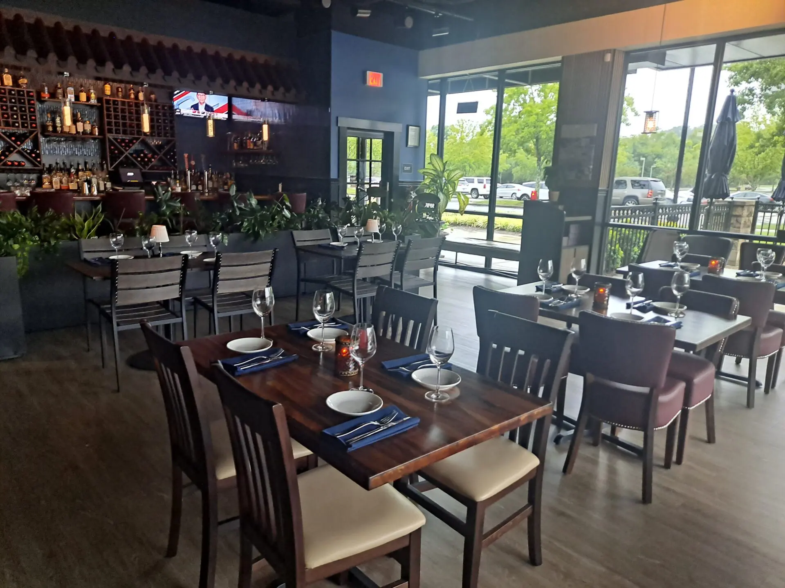

Menu
Carryout
Contact
Reservations
Farm-To-Table
About Us
Reference
Welcome to Nature's Cafe!

About Us
At Nature's Cafe, it is here that we provide a top quality in our variety of food to our customers and hence, provide our fellow vegetarians with the best service that they could ask for. We serve out diners with fresh vegetables and dishes that can develop as favorites for our customers. At the Nature’s Cafe, our employees and staff can assure you to give their best services to hold you a wonderful time at our beloved cafe. As for our dishes, we offer food through many cuisines, with the loaded options of pre-meal appetizers, salads, pastas, wraps, desserts, and so much more! Keep in mind, these dishes are made using natural goods and we use the healthiest of produce to bring the greatest of flavors to our diners. Finally, we understand the importance of the environment and maintaining a sustainable group of species of animals around the world. Therefore, we count on vegetables to prevent any harm to these animals, as we understand the significance of all life around our ecosystems. Another way we can do our part to keep our environments sound is recycling! To assure this, we use non-plastic items, especially straws, along with other items at the Nature’s Cafe and include various recycle bins at our restaurant, as well. This is to help you, our diners, do a little part in making our natural environment cleaner for animals that are of the utmost importance to our staff. Once again, on behalf of everyone at the Nature’s Cafe, we are thankful to you for visiting, however, providing a friendly environment that unites our community into trying our exquisite cuisines, and ensuring an eco-friendly environment for a better future amongst all circles of life that strive in our beautiful planet.